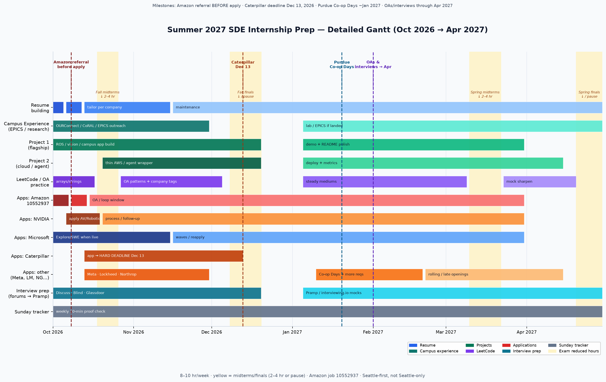

08 · Visual
Gantt / timeline
Embed of the detailed Summer 2027 Gantt plus month-by-month focus.
Visual overview
Detailed Gantt for Summer 2027 internship / co-op prep (Oct 2026 → Apr 2027). Pinch-zoom or scroll horizontally on phone. For dated company status, see Applications & deadlines.

Season in one breath
- Oct – mid Nov: Resume · Amazon referral → apply 10552937 · NVIDIA · Microsoft when live · start Caterpillar
- Dec 13: Caterpillar hard deadline · finals first
- January: SURF · research outreach · OPP Co-op Days
- Feb – Mar: Portfolio · PRs · co-op conversion · accept/decline
- Apr: Summer success plan · logistics · grades
Month focuses
| Month | Focus |
|---|---|
| Oct 2026 | Amazon, MSR (Oct 5), Google Silicon (Oct 9), NVIDIA, Microsoft Explore, start Caterpillar, defense apps |
| Nov 2026 | Caterpillar before Thanksgiving, Tesla/Meta sweeps, Boston Dynamics Talent Hub, OPP Gateway |
| Dec 2026 | Caterpillar Dec 13, interview loops, SURF prep, finals |
| Jan 2027 | OPP Co-op Days, Boston Dynamics new-year postings, research (OUR/CoRAL/Kak), SURF submit |
| Feb 2027 | Late industrial + robotics startups, accept/decline, portfolio freeze |
| Mar–Apr 2027 | Final offers, Honeywell soft close (~Mar 31) only if still open, CPT/housing, Spring 2028 co-op alerts |
Seen the chart?
- I opened and skimmed the Gantt image
- I know Caterpillar Dec 13 and Amazon rolling + referral-first
- January Co-op Days is on my calendar (exact date TBA)